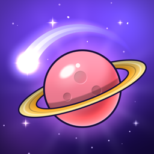

One tap. Endless space. · Tek dokunuş. Sonsuz uzay.
Last updated: October 11, 2026
Orbit Leap ("the app") is a game by Dilara Irmak. This page explains what happens to data while you play. The same summary is in the app under Settings > Privacy policy.
Your best score, stars, comets, levels, missions, trophies and settings (sound, music, vibration, language, accessibility) are stored only on your device. Deleting the app deletes them. You can also erase your progress at any time in Settings > Reset progress; your settings and purchases are kept.
You never sign up or sign in with us. The app has no server of its own and no analytics or crash-reporting service of its own (Unity Analytics and Unity crash reporting are turned off). The developer cannot see who plays or how.
The free game shows two kinds of ads:
Ads are served by Unity LevelPlay (Unity Technologies, formerly ironSource) with the Unity Ads network. To show ads, limit how often they appear, measure them and prevent fraud, these providers may collect device identifiers, your IP address and information derived from it (such as approximate location), device and operating-system information, ad interactions, in-app purchase events, and usage and performance data. They may link this data to a device identifier or to an ID they assign, so it can be associated with you. They process this data under their own policy: Unity Privacy Policy.
Tracking. iOS asks once whether the app may track you (on the menu or the game-over screen, never during a game). The advertising identifier (IDFA) is shared with the ad providers only if you allow it; if you do not, you see ads that are not personalized. You can change your choice anytime in iOS Settings > Privacy & Security > Tracking.
EEA, UK and Turkey. Allowing tracking on iOS is not treated as consent to personalized ads under the GDPR or KVKK: in these regions the ad providers apply their own consent rules, and if you ask the app not to track you, the game also tells them that you do not consent to personalized ads. The developer never receives this data, so requests about it (access, deletion, objection) go to Unity through the Unity Privacy Policy linked above.
The optional "Remove ads" purchase (it removes the ads between games) is processed by Apple. The developer never sees your payment details. The purchase is remembered on your device and can be restored with Settings > Restore purchases.
In versions that offer Game Center, if you are signed in to Game Center, your scores and trophies are sent to Apple Game Center under Apple's privacy policy. The developer never receives them.
If you turn on the daily reminder, it is a local notification scheduled on your device. Nothing is sent to a server. You can turn it off in Settings.
Orbit Leap is rated 4+ for its content. It is a general-audience game and is not directed at children under 13, and the developer does not knowingly collect personal data from anyone. Parents can turn off tracking in iOS Settings > Privacy & Security > Tracking (or with Screen Time), and the "Remove ads" purchase removes the ads between games.
If this policy changes, the updated version will be posted on this page with a new date.
Son güncelleme: 11 Ekim 2026
Orbit Leap ("uygulama"), Dilara Irmak'ın bir oyunudur. Bu sayfa, oynarken verilere ne olduğunu anlatır. Aynı özet uygulamada Ayarlar > Gizlilik Politikası bölümünde de var.
Rekorun, yıldızların, kuyruklu yıldızların, seviyelerin, görevlerin, kupaların ve ayarların (ses, müzik, titreşim, dil, erişilebilirlik) yalnızca cihazında saklanır. Uygulamayı silince bunlar da silinir. İlerlemeni istediğin zaman Ayarlar > İlerlemeyi Sıfırla bölümünden de silebilirsin; ayarların ve satın alımların korunur.
Bize hiçbir zaman kaydolmaz veya giriş yapmazsın. Oyunun kendi sunucusu, kendi analiz ya da çökme raporlama hizmeti yoktur (Unity Analytics ve Unity çökme raporlaması kapalıdır). Geliştirici kimin, nasıl oynadığını göremez.
Ücretsiz oyunda iki tür reklam vardır:
Reklamlar, Unity Ads ağıyla birlikte Unity LevelPlay (Unity Technologies, eski adıyla ironSource) tarafından sunulur. Bu sağlayıcılar reklamları göstermek, ne sıklıkla çıktıklarını sınırlamak, ölçmek ve dolandırıcılığı önlemek için cihaz tanımlayıcılarını, IP adresini ve ondan çıkarılan bilgileri (yaklaşık konum gibi), cihaz ve işletim sistemi bilgilerini, reklam etkileşimlerini, uygulama içi satın alım olaylarını, kullanım ve performans verilerini toplayabilir. Bu verileri bir cihaz tanımlayıcısına veya kendi verdikleri bir kimliğe bağlayabilirler; böylece veriler seninle ilişkilendirilebilir. Bu verileri kendi politikalarına göre işlerler: Unity Gizlilik Politikası.
Takip. iOS, uygulamanın seni takip etmesine izin verip vermediğini bir kez sorar (menüde veya oyun sonu ekranında, hiçbir zaman oyun sırasında değil). Reklam kimliği (IDFA) reklam sağlayıcılarıyla yalnızca izin verirsen paylaşılır; izin vermezsen sana kişiselleştirilmemiş reklamlar gösterilir. Seçimini istediğin zaman iOS Ayarlar > Gizlilik ve Güvenlik > Takip bölümünden değiştirebilirsin.
AEA, Birleşik Krallık ve Türkiye. iOS'ta takibe izin vermen, GDPR veya KVKK kapsamında kişiselleştirilmiş reklamlara onay olarak sayılmaz: bu bölgelerde reklam sağlayıcıları kendi onay kurallarını uygular; uygulamanın seni takip etmemesini istersen oyun onlara kişiselleştirilmiş reklamlara onay vermediğini de bildirir. Geliştirici bu verileri hiç almaz; bu yüzden onlarla ilgili taleplerini (erişim, silme, itiraz) yukarıdaki Unity Gizlilik Politikası üzerinden Unity'ye iletebilirsin.
İsteğe bağlı "Reklamları kaldır" satın alımı (oyunlar arasındaki reklamları kaldırır) Apple tarafından işlenir. Geliştirici ödeme bilgilerini hiçbir zaman görmez. Satın alım cihazında hatırlanır ve Ayarlar > Satın alımları geri yükle ile geri yüklenebilir.
Game Center sunan sürümlerde, Game Center'a giriş yaptıysan skorların ve kupaların Apple'ın gizlilik politikası kapsamında Apple Game Center'a gönderilir. Geliştirici bunları hiçbir zaman almaz.
Günlük hatırlatıcıyı açarsan bu, cihazında planlanan yerel bir bildirimdir. Hiçbir şey sunucuya gönderilmez. Ayarlar'dan kapatabilirsin.
Orbit Leap içeriği nedeniyle 4+ olarak derecelendirilmiştir. Genel kitleye yönelik bir oyundur, 13 yaş altı çocuklara yönelik değildir ve geliştirici kimseden bilerek kişisel veri toplamaz. Ebeveynler takibi iOS Ayarlar > Gizlilik ve Güvenlik > Takip bölümünden (veya Ekran Süresi ile) kapatabilir; "Reklamları kaldır" satın alımı oyunlar arasındaki reklamları kaldırır.
Bu politika değişirse güncel hâli yeni tarihle bu sayfada yayımlanır.